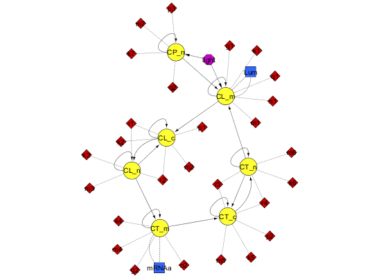

AMIGO_GRank
Contents
Task description
- Computes local sensitivities for a sample of values of model unknowns. Sampling is performed by using the Latin Hipercube
sampling method within the selected bounds.
- Computes overall (for all experiments and observables) ranking of
global unknowns (experiment independent parameters and initial
conditions) for the given experimental scheme.
Call AMIGO_GRank from command line
It is recommended to keep all inputs in a 'problem_file'.m. SObs task can then be called in two different ways:
1. Using the inputs structure:
> problem_file
> AMIGO_GRank(inputs)
2. Using the input file:
> AMIGO_GRank('problem_file') > AMIGO_GRank('problem_file','run_ident')Example
% TITLE: The circadian clock in Arabidopsis thaliana

%============================ % RESULTS PATHS RELATED DATA %============================ inputs.pathd.results_folder='arabidopsis'; % Folder to keep results (in Results\) inputs.pathd.short_name='arabidopsis'; % Label to identify figures and reports %============================ % MODEL DEFINITION %============================ inputs.model.n_st=7; % Number of states inputs.model.n_par=27; % Number of parameters inputs.model.n_stimulus=1; % Number of stimuli inputs.model.st_names=char('CL_m','CL_c',...% Names of the states 'CL_n','CT_m','CT_c','CT_n','CP_n'); inputs.model.par_names=char('n1','n2','g1','g2','m1','m2','m3','m4','m5','m6',... 'm7','k1','k2','k3','k4','k5','k6','k7','p1','p2',... 'p3','r1','r2','r3','r4','q1','q2'); % Names of the parameters inputs.model.stimulus_names=char('light'); % Names of the stimuli inputs.model.eqns=... % Model equations char('dCL_m=q1*CP_n*light+n1*CT_n/(g1+CT_n)-m1*CL_m/(k1+CL_m)',... 'dCL_c=p1*CL_m-r1*CL_c+r2*CL_n-m2*CL_c/(k2+CL_c)',... 'dCL_n=r1*CL_c-r2*CL_n-m3*CL_n/(k3+CL_n)',... 'dCT_m=n2*g2^2/(g2^2+CL_n^2)-m4*CT_m/(k4+CT_m)',... 'dCT_c=p2*CT_m-r3*CT_c+r4*CT_n-m5*CT_c/(k5+CT_c)',... 'dCT_n=r3*CT_c-r4*CT_n-m6*CT_n/(k6+CT_n)',... 'dCP_n=(1-light)*p3-m7*CP_n/(k7+CP_n)-q2*light*CP_n');
IMPORTANT:
User may select any customised name but: n, t, u, y, ydot, par, tlast, told, pend and v which are reserved words
inputs.model.par=[7.5038 0.6801 1.4992 3.0412 10.0982... % Nominal parameter 1.9685 3.7511 2.3422 7.2482 1.8981 1.2 3.8045... % values 5.3087 4.1946 2.5356 1.4420 4.8600 1.2 2.1994... 9.4440 0.5 0.2817 0.7676 0.4364 7.3021 4.5703 1.0]; %============================================ % EXPERIMENTAL SCHEME (SIMULATION CONDITIONS) %============================================ inputs.exps.n_exp=2; % Number of experiments % EXPERIMENT 1 inputs.exps.exp_y0{1}=[0 0 0 0 0 0 0]; % Initial conditions inputs.exps.t_f{1}=120; % Experiments duration inputs.exps.n_obs{1}=2; % Number of observables inputs.exps.obs_names{1}=char('Lum','mRNAa'); % Names of the observables inputs.exps.obs{1}=char('Lum=CL_m',... % Observation function 'mRNAa=CT_m'); inputs.exps.u_interp{1}='sustained'; % Stimuli definition for experiment 1 inputs.exps.t_con{1}=[0 120]; % Input swithching times including: % Initial and final time inputs.exps.u{1}=1; % Values of the inputs for exp 1 inputs.exps.n_s{1}=15; % Number of sampling times % EXPERIMENT 2 inputs.exps.exp_y0{2}=[0 0 0 0 0 0 0]; % Initial conditions inputs.exps.t_f{2}=120; % Experiments duration inputs.exps.n_obs{2}=2; % Number of observables inputs.exps.obs_names{2}=char('Lum','mRNAa'); % Names of the observables inputs.exps.obs{2}=char('Lum=CL_m',... % Observation function 'mRNAa=CT_m'); inputs.exps.u_interp{2}='pulse-down'; % Stimuli definition for experiment 2 inputs.exps.n_pulses{2}=5; % Number of pulses inputs.exps.u_min{2}=0; % Minimum and maximum of inputs inputs.exps.u_max{2}=1; inputs.exps.t_con{2}=0:12:120; % Input switching times inputs.exps.n_s{2}=25; % Number of sampling times %============================================ % PARAMETERS TO BE CONSIDERED IN THE ANALYSIS %============================================ inputs.PEsol.id_global_theta=... char('n1','n2','m1','m4','m6','m7','k1','k4','p3'); % List of parameters to be estimated % Option inputs.PEsol.global_theta_guess=[... % Initial guess for the parameter values 6.09794 % Options: mean(max,min) if not provided 0.710144 8.92735 2.38504 2.11024 1.29912 4.32079 2.45277 0.493076]'; inputs.PEsol.global_theta_max=[ 60.9794 % Upper bound for the parameter values 7.1014 89.2735 23.8504 21.1024 12.9912 43.2079 24.5277 4.9308]'; inputs.PEsol.global_theta_min=[ 0.0610 % Lower bound for the parameter values 0.0071 0.0893 0.0239 0.0211 0.0130 0.0432 0.0245 0.0049]'; %============================================ % NUMBER OF SAMPLES FOR THE ANALYSIS %============================================ inputs.rank.gr_samples=10000; % Number of parameter values within the bounds % Default:10000 %================================ % CALL AMIGO2 from COMMAND LINE %================================ AMIGO_Prep(inputs); AMIGO_GRank(inputs);
***********************************
AMIGO2, Copyright @CSIC
AMIGO2_R2016a [Oct 2015]
***********************************
*Date: 10-Dec-2015
------>Pre processing....this may take a few seconds.
------>Checking inputs....
------> WARNING message
AMIGO_check_model: You did not specify inputs.model.exe_type, standard will be assumed
------> Generating C code ...
------> Mexing files....
Building with 'MinGW64 Compiler (C)'.
D:\AMIGO2_REPO_2014\AMIGO2R2016\Kernel\IVP_solvers\cvodes\C_src4Amigo\src\src_amigo\simulate_amigo_model.c: In function 'simulate_amigo_model':
D:\AMIGO2_REPO_2014\AMIGO2R2016\Kernel\IVP_solvers\cvodes\C_src4Amigo\src\src_amigo\simulate_amigo_model.c:330:16: warning: passing argument 1 of 'mexPrintf' from incompatible pointer type
mexPrintf(stderr,"\nSolver failed at flag = CVode(cvode_mem, tout, y, &t, CV_TSTOP_RETURN);. . .\n");
^
In file included from D:\AMIGO2_REPO_2014\AMIGO2R2016\Kernel\IVP_solvers\cvodes\C_src4Amigo\include\include_amigo/simulate_amigo_model.h:4:0,
from D:\AMIGO2_REPO_2014\AMIGO2R2016\Kernel\IVP_solvers\cvodes\C_src4Amigo\src\src_amigo\simulate_amigo_model.c:1:
C:\MATLAB_R2015b_64/extern/include/mex.h:202:27: note: expected 'const char *' but argument is of type 'struct FILE *'
LIBMWMEX_API_EXTERN_C int mexPrintf(
^
D:\AMIGO2_REPO_2014\AMIGO2R2016\Kernel\IVP_solvers\cvodes\C_src4Amigo\src\src_interface\interface_with_matlab.c: In function 'mexFunction':
D:\AMIGO2_REPO_2014\AMIGO2R2016\Kernel\IVP_solvers\cvodes\C_src4Amigo\src\src_interface\interface_with_matlab.c:200:17: warning: assignment from incompatible pointer type
stats_struct = mxGetPr(plhs[5]);
^
MEX completed successfully.
------>Files generated....
***********************************
AMIGO2, Copyright @CSIC
AMIGO2_R2016a [Oct 2015]
***********************************
*Date: 10-Dec-2015
------>Checking inputs....
------> WARNING message
AMIGO_check_model: You did not specify inputs.model.exe_type, standard will be assumed
------> WARNING message
You have not provided the sampling times.
Equidistant sampling will be assumed for experiment 1
Note however that you may modify your input file by adding
inputs.exps.t_s{iexp}
------> WARNING message
You have not provided the sampling times.
Equidistant sampling will be assumed for experiment 2
Note however that you may modify your input file by adding
inputs.exps.t_s{iexp}
------>Global Ranking of parameters, this may take some time
1
---------------------------------------------------
Local sensitivity problem related active settings
---------------------------------------------------
senssolver: cvodes
ivp_RelTol: 1e-05
ivp_AbsTol: 1e-07
sens_RelTol: ~1e-05
sensmex: cvodesg_arabidopsis
MaxStepSize: Inf
MaxNumberOfSteps: 100000
sens_RelTol: ~1e-05
2 3 4 5 6 7 8 9 10 11 12 13 14 15 16 17 18 19 20 21 22 23 24 25
.....
intermediate outputs deleted
.....
9976 9977 9978 9979 9980 9981 9982 9983 9984 9985 9986 9987 9988 9989 9990 9991 9992 9993 9994 9995 9996 9997 9998 9999 10000
>>> Global Ranking calculated over 10001 different vectors of parameters
------>Plotting results....
------> GLOBAL RANKING
------>ABSOLUTE Ranking of GLOBAL unknown PARAMETERS:
d_msqr d_mabs d_mean d_max d_min
____________________________________________________________________________________________
m4 2.2400e+00 8.5975e+00 -8.3801e+00 7.7325e-01 -3.2715e+01
n2 1.7553e+00 7.2485e+00 6.5938e+00 2.4728e+01 -2.4063e+00
k4 3.7593e-01 1.4813e+00 1.3067e+00 5.5681e+00 -6.1775e-01
m1 3.7018e-01 1.7704e+00 -1.6757e+00 2.4292e-01 -4.3992e+00
n1 2.5418e-01 1.2535e+00 6.8315e-01 2.2920e+00 -8.8811e-01
m6 2.3396e-01 8.9351e-01 -8.4755e-01 1.5180e-01 -3.3875e+00
p3 2.3035e-01 7.7788e-01 6.6336e-01 4.9319e+00 -3.9812e-01
m7 2.2601e-01 7.6604e-01 -6.7015e-01 3.3205e-01 -4.7999e+00
k1 1.2990e-01 5.3719e-01 -2.7257e-01 5.8162e-01 -1.7808e+00
____________________________________________________________________________________________
------>RELATIVE Ranking of GLOBAL unknown PARAMETERS:
rd_msqr rd_mabs rd_mean rd_max rd_min
____________________________________________________________________________________________
m4 8.8978e-01 4.4534e+00 2.7790e-01 4.9402e+00 -3.9765e+01
n2 8.1055e-01 3.8679e+00 -4.9101e-01 2.9820e+01 -5.1314e+00
k4 6.3863e-01 3.3316e+00 -1.1799e-01 1.1436e+01 -3.6995e+00
m1 5.9289e-01 3.1462e+00 1.1419e+00 5.8712e+00 -8.2391e+00
n1 5.0601e-01 2.6484e+00 -1.2568e+00 4.6083e+00 -6.4531e+00
k1 2.7602e-01 1.4653e+00 -4.0056e-01 2.5348e+00 -4.7559e+00
m6 2.2208e-01 9.7384e-01 2.0054e-01 1.1491e+00 -5.5474e+00
p3 1.0731e-01 5.1003e-01 -2.1735e-01 5.3782e+00 -1.5126e+00
m7 7.7318e-02 3.4184e-01 1.1147e-01 1.0697e+00 -5.3863e+00
____________________________________________________________________________________________
> 100.00% of successful simulationn
> 100.00% of successful sensitivity calculations
<strong>
------>Results (report and struct_results.mat) and plots were kept in the directory:
</strong><strong>D:\AMIGO2_REPO_2014\AMIGO2R2016\Results\arabidopsis\GRank_arabidopsis_run1</strong>
Click <a href="matlab: cd('D:\AMIGO2_REPO_2014\AMIGO2R2016\Results\arabidopsis\GRank_arabidopsis_run1')">here</a> to go to the results folder or <a href="matlab: load('D:\AMIGO2_REPO_2014\AMIGO2R2016\Results\arabidopsis\GRank_arabidopsis_run1\strreport_arabidopsis_run1.mat')">here</a> to load the results.
See also
References
Model was taken from:
Locke J.C.W; A.J. Millar; M.S. Turner. Modelling genetic networks with noisy and varied experimental data: the circadian clock in Arabidopsis thaliana. J Theor Biol,2005, 234:383-393.
Details on ranking of parameters:
Brun R, Reichert P: Practical identifiability analysis of large environmental simulation models. Water Resources Res 2001, 37:1015-1030.
Balsa-Canto E, AA Alonso, JR Banga.An iterative identification procedure for dynamic modeling of biochemical networks. BMC Systems Biology, 2010, 4:11.
AMIGO_htmldoc_inputs(inputs,fullfile(pwd,'html','grankex1.html'));